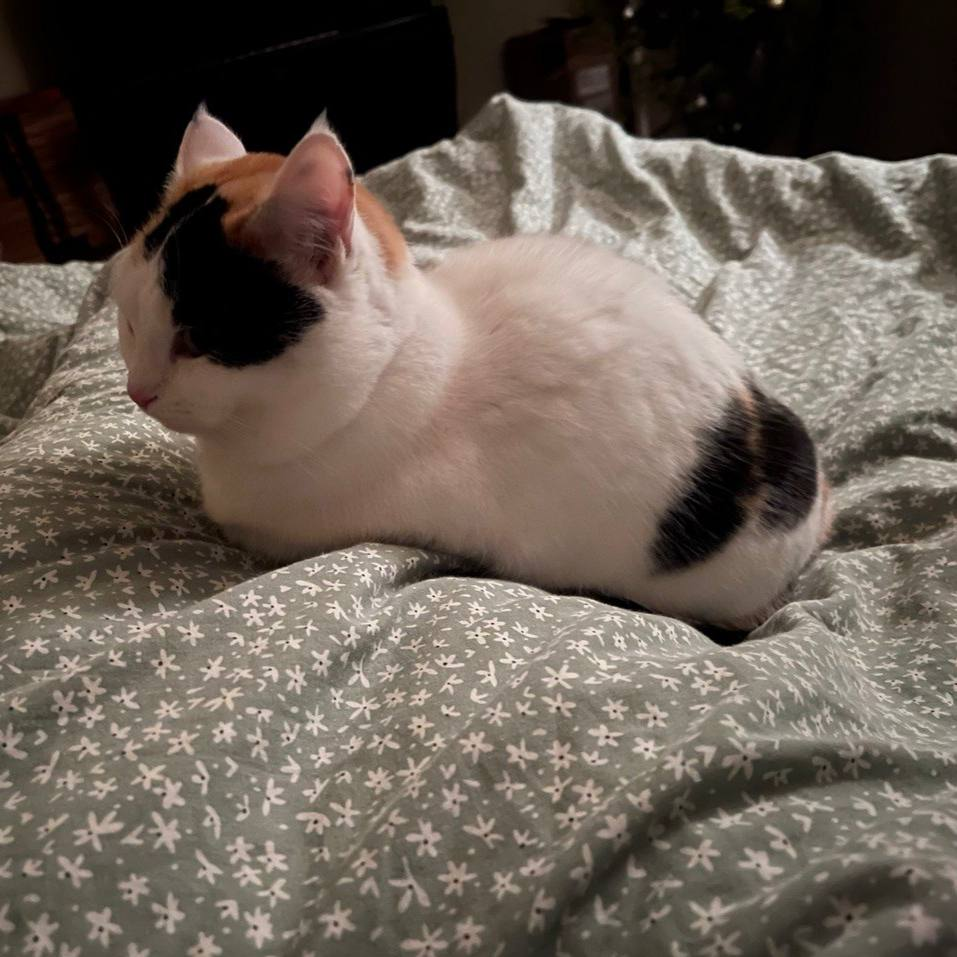

As you have seen with my works in main page I am a huge fan of The Vampire Diaries series. I have watched some really good tv shows which I want to show here. There's only two titles, but they are really good ones.
My cats
-
This is Virginia but I only use this wonderful name with vets. So for everyone she is just Ginny. Ginny this kind of very shy and clumsy cat, and she definetly a kind of chitter-chatter cat. Someday I will make Ginny.mp3 podcasts or something like this.
-

This is Effy, cat in the form of skittles, bun, roll, liquid or whatever exists in this universe. She is absolutely don't care about anything but her bowl of food. She sleepy, soft and funny.